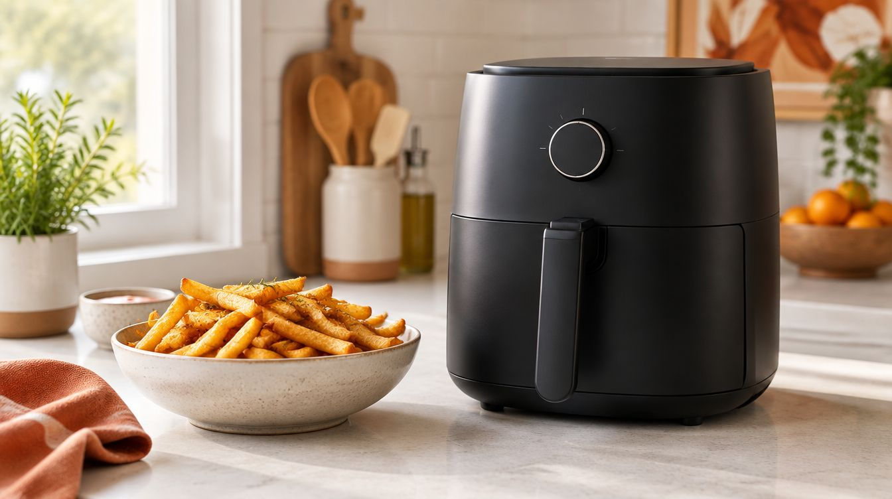
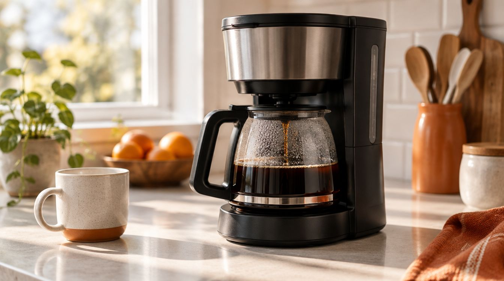
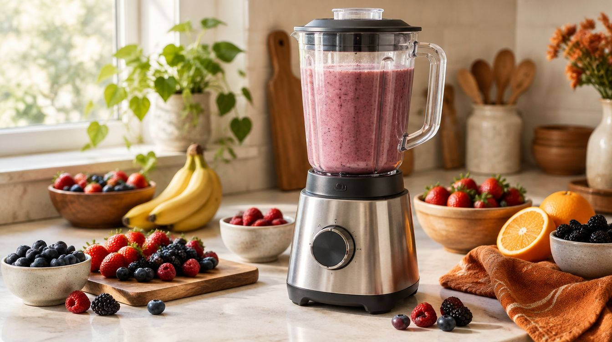
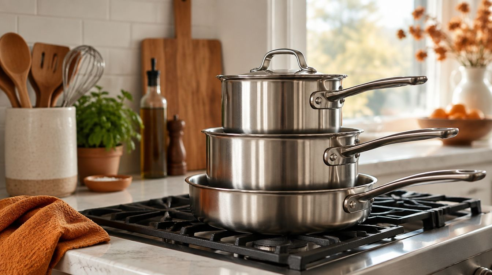
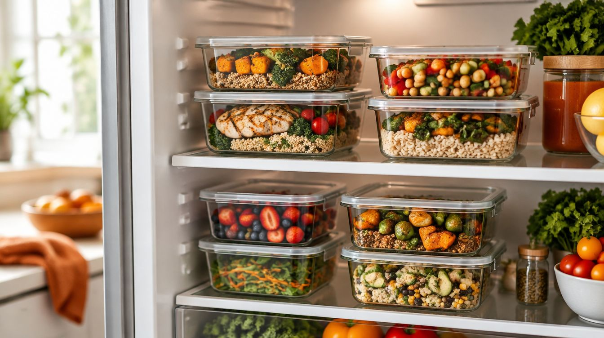
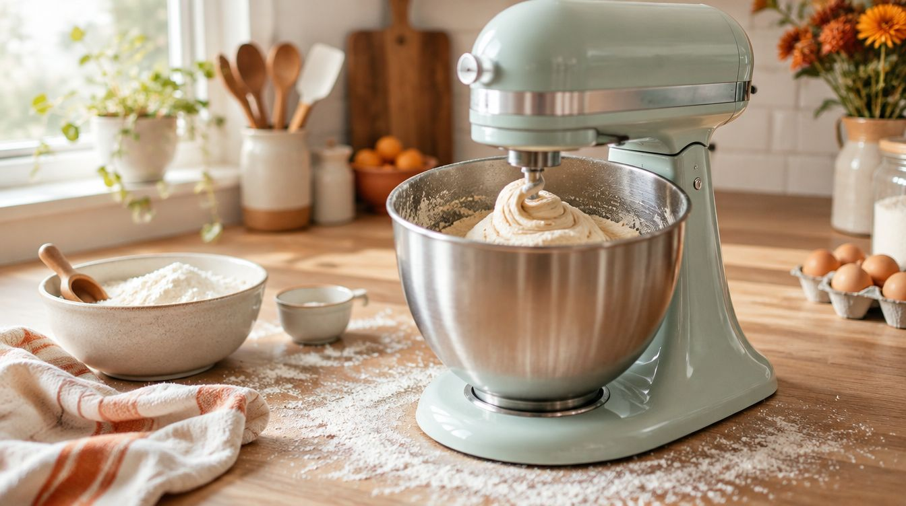

Best Air Fryers: How to Choose the Right One
How to pick an air fryer: capacity, wattage, basket vs oven style, cleaning, and common mistakes to avoid.
Buying guides for the appliances and tools that earn their counter space.

How to pick an air fryer: capacity, wattage, basket vs oven style, cleaning, and common mistakes to avoid.

Drip, single-serve, espresso, pour-over, and French press compared, plus what really affects the taste of your coffee.

Countertop, personal, and immersion blenders explained: motor power, jar material, blade design, and cleaning tips.

Which knives belong in a kitchen set, forged vs stamped blades, steel types, and how to keep knives sharp.

Stainless steel, nonstick, cast iron, and ceramic cookware compared, with tips on induction compatibility and what pieces you need.

How to choose food storage containers: glass, plastic, and stainless steel, lid types, microwave and freezer safety, and stain prevention.

Toaster oven buying guide: capacity, convection, air fry modes, controls, and placement tips.
Electric kettle buying guide: materials, temperature control, capacity, safety features, and descaling.

Electric pressure cooker and multi-cooker buying guide: size, functions, safety, and tips for first-time users.

Cutting board buying guide: materials compared, sizes, food safety, care, and what to avoid.

Stand mixer buying guide: tilt-head vs bowl-lift, bowl size, attachments, and when a hand mixer is enough.